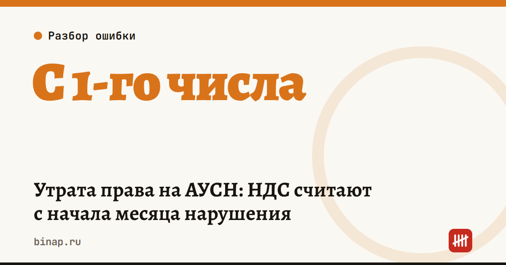

Утрата права на АУСН: НДС считают с начала месяца нарушения

Право на АУСН теряется не со дня нарушения и не со следующего месяца, а с 1-го числа месяца, в котором вы нарушили условия (ч. 2 ст. 3 закона № 17-ФЗ). С этой же даты вы на общем режиме — и с этой же даты появляется НДС.
Пример. Выручка перевалила за 60 млн ₽ 15 августа. Вы на ОСНО с 1 августа, НДС считаете со всех продаж с 1 августа, а не с 1 сентября. По данным Клерка, на это обратило внимание УФНС по Забайкальскому краю.
Из-за чего чаще всего слетают с АУСН (по разбору Контур.Эльбы): - доход с начала года больше 60 млн ₽; - средняя численность больше 5 человек, включая исполнителей по ГПХ; - деньги пришли на счёт в банке, которого нет в перечне ФНС, — даже на старый забытый счёт; - зарплату или вознаграждение физлицу выплатили наличными; - в штате появился нерезидент; - у компании появилось обособленное подразделение; - остаточная стоимость основных средств больше 150 млн ₽.
Сроки после нарушения: - сообщите об утрате права через личный кабинет не позднее 15-го числа следующего месяца; - если хотите на УСН или ЕСХН, а не на ОСНО, подайте уведомление о переходе — его можно применять с даты утраты права АУСН; - опоздали с декларацией по НДС или оплатой — будут доначисление, пени и штраф.
Что сделать сейчас: 1. Раз в месяц проверяйте доход нарастающим итогом и численность с учётом ГПХ. 2. Закройте счета в банках, которых нет в перечне ФНС, или не давайте их реквизиты клиентам. 3. Если нарушение уже случилось — считайте НДС с 1-го числа месяца нарушения и подайте уведомление до 15-го числа следующего месяца.
Частые вопросы
С какой даты платить НДС? С 1-го числа месяца, в котором произошло нарушение.
Можно ли вернуться на АУСН? Со следующего года. По данным Контур.Эльбы, после превышения 60 млн ₽ — нет, потому что лимит проверяют и по доходу прошлого года.